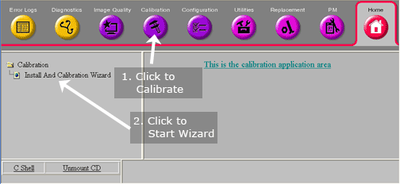
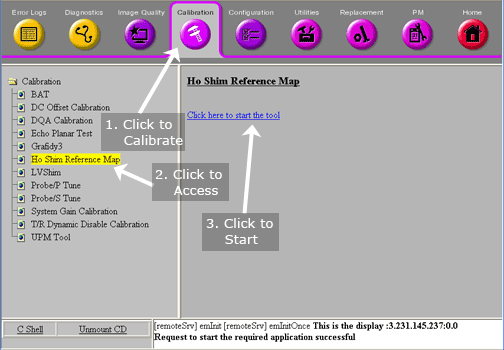

If a service key is present and you want to run the Installation Calibration Wizard, the following screen will appear (see Illustration 3). Click Install and Calibration Wizard.
Illustration 3: Starting HOShim from Calibration Wizard

Once the wizard starts, select HOShim Procedurefrom the menu if available.
Note: if this calibration is not available see ICW help document.
-or-
If a service key is not present, the following screen will appear (see Illustration 4).
Illustration 4: Starting HOShim

Select HOShim Reference Map from the calibration menu.
Select [Click here to start the tool].